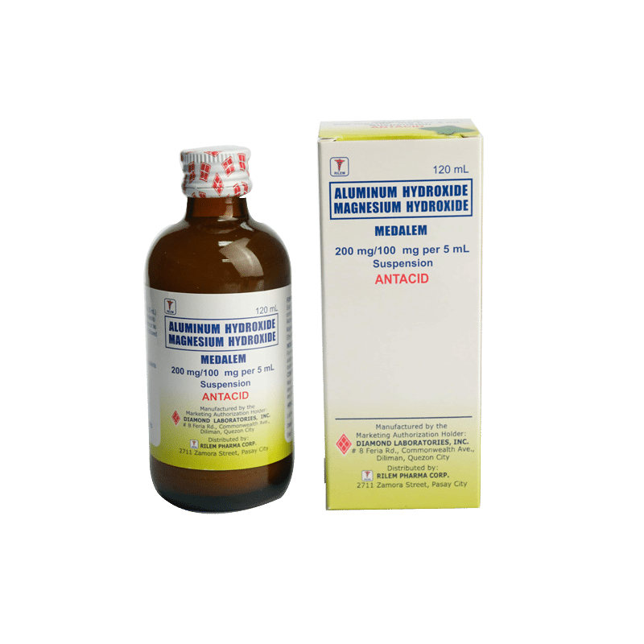

Omeprazole is a proton pump inhibitor (PPI) that effectively treats frequent heartburn, acid reflux, and other conditions caused by excess stomach acid. One capsule provides 24-hour relief from acid-related symptoms.
Description
Omeprazole belongs to a class of medications called proton pump inhibitors (PPIs). It works by decreasing the amount of acid produced in the stomach by blocking the enzyme in the wall of the stomach that produces acid. This reduction in stomach acid helps alleviate symptoms associated with acid-related conditions and allows damaged tissue in the esophagus, stomach, and duodenum to heal.
Our Omeprazole 20mg delayed-release capsules are designed to bypass the stomach and dissolve in the small intestine, ensuring the medication reaches the right location for maximum effectiveness. Each capsule provides 24-hour relief from acid-related symptoms with just one daily dose, making it convenient for those who suffer from frequent heartburn or acid reflux.
Active Ingredient
Each delayed-release capsule contains 20mg of Omeprazole.
Uses
Treats frequent heartburn (occurring 2 or more days a week)
Relieves symptoms of gastroesophageal reflux disease (GERD)
Heals acid-related damage to the esophagus (erosive esophagitis)
Reduces stomach acid to prevent or treat stomach and intestinal ulcers
Helps manage conditions where the stomach produces too much acid, such as Zollinger-Ellison syndrome
May be used as part of a combination therapy to treat H. pylori infection (under medical supervision)
How It Works
Omeprazole works by:
Blocking the hydrogen-potassium adenosine triphosphatase enzyme system (the "proton pump") in gastric parietal cells
Suppressing the final step in stomach acid production
Reducing the amount of acid in the stomach by up to 90%
Providing relief from acid-related symptoms for a full 24 hours with each dose
Allowing damaged tissue in the digestive tract to heal by reducing acid exposure
Dosage
For adults 18 years and older:
Take one capsule (20mg) with a glass of water daily, in the morning before eating
Swallow the capsule whole - do not crush, chew, or open the capsule
For best results, take consistently at the same time each day
It may take 1-4 days for full effect, although some people experience relief on the first day
Do not take for more than 14 days continuously unless directed by a doctor
If needed, a 14-day course may be repeated once every 4 months
Children under 18 years:
Not recommended for use in children without medical supervision
Precautions
Do not use if you:
Are allergic to omeprazole or any other proton pump inhibitor (PPI)
Have trouble or pain swallowing food, vomiting with blood, or bloody or black stools
Have heartburn with lightheadedness, sweating, or dizziness
Have chest or shoulder pain with shortness of breath, sweating, pain spreading to arms, neck or shoulders, or lightheadedness
Have been using an antacid for more than 3 months to control symptoms
Ask a doctor before use if you have:
Had heartburn for over 3 months
Heartburn with unexplained weight loss
Nausea or vomiting
Stomach pain
Liver or kidney disease
Low magnesium levels
Osteoporosis or risk factors for bone fractures
Ask a doctor or pharmacist before use if you are:
Taking warfarin (blood-thinning medicine)
Taking prescription antifungal or anti-yeast medicines
Taking diazepam (anxiety medicine)
Taking digoxin (heart medicine)
Taking tacrolimus or mycophenolate mofetil (immune system medicines)
Taking any other medications, as omeprazole may interact with many drugs
Stop use and ask a doctor if:
Your heartburn continues or worsens
You need to take this product for more than 14 days
You need to take more than 1 course of treatment every 4 months
You develop diarrhea, especially if it's watery or bloody
You experience new or worsening joint pain
You develop a rash on your cheeks or arms that gets worse in the sun
Possible Side Effects
Common side effects:
Headache
Abdominal pain
Nausea
Diarrhea
Vomiting
Gas
Constipation
Less common side effects:
Dizziness
Rash
Fatigue
Vitamin B12 deficiency (with long-term use)
Low magnesium levels (with long-term use)
Increased risk of bone fractures (with long-term use)
Increased risk of certain intestinal infections
Rare but serious side effects (seek immediate medical attention):
Severe allergic reactions (rash, itching, swelling, severe dizziness, trouble breathing)
Severe stomach pain
Persistent diarrhea, especially if bloody
Unusual tiredness or weakness
Muscle spasms or cramps
Irregular heartbeat
Seizures
Storage
Store at room temperature (20-25°C or 68-77°F)
Keep away from moisture and heat
Keep the container tightly closed
Keep out of reach of children
Lifestyle and Diet Tips for Acid Reflux
In addition to taking Omeprazole as directed, these lifestyle changes may help manage acid reflux symptoms:
Maintain a healthy weight
Eat smaller, more frequent meals
Avoid lying down for 2-3 hours after eating
Elevate the head of your bed 6-8 inches
Avoid trigger foods such as:
Spicy, fatty, or fried foods
Citrus fruits and tomatoes
Chocolate and mint
Onions and garlic
Carbonated beverages
Coffee and alcohol
Quit smoking
Avoid tight-fitting clothing around the waist
Manage stress through relaxation techniques
Long-term Considerations
While Omeprazole is effective for short-term treatment of acid-related conditions, long-term use should be discussed with a healthcare provider due to potential risks including:
Vitamin and mineral deficiencies (particularly vitamin B12, magnesium, calcium)
Increased risk of certain infections
Potential increased risk of bone fractures
Possible kidney problems
If you require acid-reducing medication for more than 14 days or experience recurring symptoms, consult with a healthcare provider to determine the underlying cause and appropriate treatment plan.
Related Products

Antacid
Digestive Health
Neutralizes stomach acid and relieves heartburn, indigestion, and upset stomach. Available in tablets and liquid form.
The information provided on this website is for general informational purposes only and does not replace professional medical advice. Always consult with a healthcare professional before taking any medication, especially if you have existing health conditions or are taking other medications.